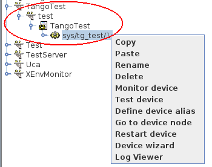

Linux¶
Binary packages are available for Debian based systems in the official repositories. Use apt-get to install them e.g. to install the TANGO database and test device server:
$> sudo apt-get install mysql-server\
sudo apt-get install tango-db tango-test
Python binaries can be installed from the official repositories
$> apt-get python-pytango
$> apt-get python3-pytango
The following video will help you to install TANGO on Ubuntu and LinuxMint (by Mohamed Cherif Areour, in French with English sub-titles).
How to test that everything was correctly installed
You have to have “tango-test” been installed and check where is it located (you can use “locate TangoTest” command) and start “test” command.
For example:
/usr/lib/tango/TangoTest test
You will have “Ready to accept request”.
After you may go to JIVE and choose the following (see the img below):
TangoTest (it is a server)-> test (it is an instance) -> TangoTest (it is a class) -> sys/tg-test/1 (it is a device)
Right click on the device and choose “Test device”.
You should get a new window with “Attributes” where you should see the values. That means you have done everything correct.